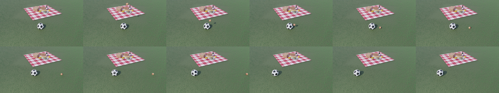

CODING AGENTS AS PIXEL WORLD MODELS
gemini-3.8-flash · pcve_0078
失败诊断
{"error":{"code":30070015,"message":"{\"code\":-4003,\"message\":\"{\\n \\\"error\\\": {\\n \\\"code\\\": 400,\\n \\\"message\\\": \\\"Invalid JSON payload received. Unexpected token.\\\\n_image\\\\\\\",\\\\\\\"response\\\\\\\":[Image omitted: not s\\\\n ^\\\",\\n \\\"status\\\": \\\"INVALID_ARGUMENT\\\"\\n }\\n}\\n\"}","type":""}}；missing required artifacts: generate.py, pixels.npz, inspection.png, transition_check.png, index.html
缺失产物：generate.py, pixels.npz, inspection.png, transition_check.png, index.html
终止/错误消息
{"error":{"code":30070015,"message":"{\"code\":-4003,\"message\":\"{\\n \\\"error\\\": {\\n \\\"code\\\": 400,\\n \\\"message\\\": \\\"Invalid JSON payload received. Unexpected token.\\\\n_image\\\\\\\",\\\\\\\"response\\\\\\\":[Image omitted: not s\\\\n ^\\\",\\n \\\"status\\\": \\\"INVALID_ARGUMENT\\\"\\n }\\n}\\n\"}","type":""}}
{"error":{"code":30070015,"message":"{\"code\":-4003,\"message\":\"{\\n \\\"error\\\": {\\n \\\"code\\\": 400,\\n \\\"message\\\": \\\"Invalid JSON payload received. Unexpected token.\\\\n_image\\\\\\\",\\\\\\\"response\\\\\\\":[Image omitted: not s\\\\n ^\\\",\\n \\\"status\\\": \\\"INVALID_ARGUMENT\\\"\\n }\\n}\\n\"}","type":""}}尚未保存可播放视频
From frame 1 onwards, increase the soccer ball's mass to 4 times its original value.
failed编辑前的完整原视频
上方为编辑结果；原视频是模型获准使用的输入。下方为逐轮保存的编辑候选。
逐轮保存的候选
回放视频、检查图与代码变化。
每份候选均可单独播放。实际图片检查记录在下方工具轨迹中。
可观测工具轨迹
实际执行的命令与返回图片。
命令 1exit 0
/bin/bash -lc 'ls -la'
命令 2exit 0
/bin/bash -lc 'cat prompt.txt && echo "---" && cat GENERATION_RULES.md && echo "---" && cat task_spec.json && echo "---" && cat source_info.json'
命令 3exit 0
/bin/bash -lc "python3 -c \"
import numpy as np
data = np.load('source_pixels.npz')
print('keys:', data.files)
for k in data.files:
print(k, data[k].shape, data[k].dtype)
\""命令 4exit 0
/bin/bash -lc "python3 -c \"
import cv2
import numpy as np
import json
data = np.load('source_pixels.npz')['rgb']
# Let's save a grid or sequence of frames to understand what happens
# What is moving?
diffs = []
for t in range(len(data)-1):
diff = np.mean(np.abs(data[t+1].astype(float) - data[t].astype(float)))
diffs.append((t, diff))
# Let's print difference between consecutive frames
for t, d in diffs[:40]:
print(f'Frame {t+1}->{t+2}: diff = {d:.3f}')
\""命令 5exit 0
/bin/bash -lc "python3 -c \"
import cv2
import numpy as np
data = np.load('source_pixels.npz')['rgb']
# Compare frame 0 and other frames
for t in [0, 5, 10, 15, 18, 20, 25, 30, 36, 40, 50, 60, 70, 80, 95]:
diff0 = np.abs(data[t].astype(float) - data[0].astype(float))
# where is diff > 20?
mask = np.any(diff0 > 20, axis=-1)
if np.any(mask):
ys, xs = np.where(mask)
print(f'Frame {t+1}: {np.sum(mask)} changed pixels. bbox: y=[{ys.min()},{ys.max()}], x=[{xs.min()},{xs.max()}]')
else:
print(f'Frame {t+1}: no significant change')
\""命令 6exit 0
/bin/bash -lc "python3 -c \"
import cv2
import numpy as np
data = np.load('source_pixels.npz')['rgb']
# Let's save a crop of frames 10-30 showing the objects
for t in range(10, 35, 2):
cv2.imwrite(f'.tmp/frame_{t:02d}.png', cv2.cvtColor(data[t], cv2.COLOR_RGB2BGR))
print('Saved frames 10-34')
\""命令 7exit 0
/bin/bash -lc "python3 -c \"
import cv2
import numpy as np
data = np.load('source_pixels.npz')['rgb']
# Let's inspect where objects are in each frame:
# Specifically, soccer ball is initially at some position around y=70..95, x=110..130?
# Let's find soccer ball position in frame 0:
f0 = data[0]
# Soccer ball has black and white patches, surrounded by green grass
# Let's find the soccer ball center and bbox in frame 0:
# Grass color is around:
grass_sample = f0[120, 50]
print('Grass color:', grass_sample)
# Let's detect the soccer ball in frame 0:
# The soccer ball is around the center-bottom:
# y around 70:95, x around 110:135
# Let's print out the crop around that:
ball_crop = f0[65:100, 110:140]
print('ball crop shape:', ball_crop.shape)
\""命令 8exit 0
/bin/bash -lc "python3 -c \"
import cv2
import numpy as np
data = np.load('source_pixels.npz')['rgb']
# Let's inspect what happens around frame 10..30
# Let's track:
# 1) The projectile that enters the screen
# 2) The soccer ball
for t in range(5, 30):
f = data[t]
# diff from frame 0
diff = np.max(np.abs(f.astype(float) - data[0].astype(float)), axis=-1)
mask = diff > 25
num = np.sum(mask)
if num > 0:
ys, xs = np.where(mask)
# Connected components
num_labels, labels, stats, centroids = cv2.connectedComponentsWithStats(mask.astype(np.uint8))
print(f'Frame {t+1}: total diff px={num}')
for i in range(1, num_labels):
x, y, w, h, area = stats[i]
if area > 3:
cx, cy = centroids[i]
print(f' obj {i}: area={area}, bbox=[{x},{y},{w},{h}], center=({cx:.1f},{cy:.1f})')
\""命令 9exit 0
/bin/bash -lc "python3 -c \"
import cv2
import numpy as np
data = np.load('source_pixels.npz')['rgb']
# What is obj 1 around bbox=[131, 9] in frame 10?
# Notice: obj 1: y=[9..63], x=[131..135]"'! That is falling from above?
# Wait! Let'"'s check frame 9, 10, 11, 12, 13, 14
for t in range(8, 16):
f = data[t]
print(f'=== Frame {t+1} ===')
diff = np.max(np.abs(f.astype(float) - data[0].astype(float)), axis=-1)
mask = diff > 25
num_labels, labels, stats, centroids = cv2.connectedComponentsWithStats(mask.astype(np.uint8))
for i in range(1, num_labels):
x, y, w, h, area = stats[i]
if area >= 3:
print(f' obj {i}: area={area}, bbox=[{x},{y},{w},{h}], center=({centroids[i][0]:.1f},{centroids[i][1]:.1f})')
\""命令 10exit 0
/bin/bash -lc "python3 -c \"
import cv2
import numpy as np
data = np.load('source_pixels.npz')['rgb']
# Let's see what is at obj 1 in frame 10: bbox [131, 9, 9, 8]
print('Frame 10 obj 1 crop rgb:')
crop = data[9, 9:17, 131:140]
print(crop.shape)
print('Average color:', crop.mean(axis=(0,1)))
# And obj 2 in frame 9, 10:
crop2 = data[9, 48:51, 167:172]
print('Obj 2 average color:', crop2.mean(axis=(0,1)))
# Wait, obj 1 at y=9, x=131 is on the picnic blanket"'! Look at Image #2 frame 10!
# Look at Image #2: frame 10 has something at the top of the blanket?
# Wait! Let'"'s check Image #2:
# In frame 10, at the top edge of the picnic blanket, there is a brown object"'!
# Wait, what about frame 1? Is there an apple/bread/bottle?
# On the picnic blanket: basket, bottle, plate, cheese...
"'命令 11exit 0
/bin/bash -lc "python3 -c \"
import cv2
import numpy as np
data = np.load('source_pixels.npz')['rgb']
# Let's save frames 6 to 20 as individual images so we can inspect what is actually moving"'!
import os
os.makedirs('"'.tmp/inspect', exist_ok=True)
for t in range(0, 30):
cv2.imwrite(f'.tmp/inspect/f_{t+1:02d}.png', cv2.cvtColor(data[t], cv2.COLOR_RGB2BGR))
print('Saved frames 1..30')
\""命令 12exit 0
/bin/bash -lc "python3 -c \"
import cv2
import numpy as np
# Let's inspect where the soccer ball is located in frames 1 to 96"'!
# Where is the soccer ball in frame 1?
data = np.load('"'source_pixels.npz')['rgb']
# In frame 1, soccer ball is around cx=124, cy=81
# Let's check center of soccer ball across all frames:
# We can find soccer ball position by template matching or tracking the black/white pattern"'!
template = data[0, 70:92, 114:136] # 22x22 soccer ball
for t in range(0, 96, 5):
f = data[t]
res = cv2.matchTemplate(f, template, cv2.TM_CCOEFF_NORMED)
min_val, max_val, min_loc, max_loc = cv2.minMaxLoc(res)
print(f'"'Frame {t+1:02d}: max match {max_val:.3f} at {max_loc}')
\""命令 13exit 0
/bin/bash -lc "python3 -c \"
# Let's inspect what is happening frame by frame from frame 1 to 40
import cv2
import numpy as np
data = np.load('source_pixels.npz')['rgb']
# Let's check obj 1 that was falling from y=9, x=131 in frame 10:
# Wait"'! In frame 10, y=9 to 17, x=131 to 140.
# In frame 11, y=26 to 33, x=131 to 139.
# In frame 12, y=43 to 50, x=131 to 139.
# In frame 13, y=60 to 67, x=131 to 138.
# In frame 14, it hit something! The soccer ball is at y=70..92, x=114..136!
print('"'Look at y-coords: 9 -> 26 -> 43 -> 60 -> 77"'!'"')
print('Speed is ~17 pixels/frame downward"'!'"')
\""命令 14exit 0
/bin/bash -lc "python3 -c \"
import cv2
import numpy as np
data = np.load('source_pixels.npz')['rgb']
# What is obj 2 at [167, 48]?
# In frame 6: [178, 36]
# In frame 7: [175, 39]
# In frame 8: [172, 43]
# In frame 9: [169, 49]
# In frame 10: [167, 48]... wait, what is that?
# Let's check pixel values of that obj:
for t in range(5, 14):
f = data[t]
diff = np.max(np.abs(f.astype(float) - data[0].astype(float)), axis=-1)
mask = diff > 20
# where is it in the right half of blanket?
ys, xs = np.where(mask)
for y, x in zip(ys, xs):
if x > 145:
# print first one
print(f'Frame {t+1}: x={x}, y={y}, color={f[y, x]}, diff={diff[y, x]}')
break
\""命令 15exit 0
/bin/bash -lc "python3 -c \"
# Let's crop around the blanket and objects in frames 1, 10, 14, 18, 25, 35
# and save an image grid to .tmp/inspection.png
import cv2
import numpy as np
data = np.load('source_pixels.npz')['rgb']
frames = [0, 9, 12, 13, 14, 17, 21, 26, 35, 45, 60, 80]
rows = []
for t in frames:
rows.append(data[t])
grid = np.concatenate(rows[:6], axis=1)
grid2 = np.concatenate(rows[6:], axis=1)
full = np.concatenate([grid, grid2], axis=0)
cv2.imwrite('.tmp/grid.png', cv2.cvtColor(full, cv2.COLOR_RGB2BGR))
print('Saved grid shape:', full.shape)
\""视觉工具实际返回图片 1

保存候选 0 份；完成命令 15 次；可验证图片返回 1 张。原始 API 响应与完整日志保留在本地。
运行生命周期事件
2026-11-13T09:02:58.355668+00:00 · thread.started ·
2026-11-13T09:02:59.169370+00:00 · turn.started ·
2026-11-13T09:07:37.740257+00:00 · error · {"error":{"code":30070015,"message":"{\"code\":-4003,\"message\":\"{\\n \\\"error\\\": {\\n \\\"code\\\": 400,\\n \\\"message\\\": \\\"Invalid JSON payload received. Unexpected token.\\\\n_image\\\\\\\",\\\\\\\"response\\\\\\\":[Image omitted: not s\\\\n ^\\\",\\n \\\"status\\\": \\\"INVALID_ARGUMENT\\\"\\n }\\n}\\n\"}","type":""}}
2026-11-13T09:07:38.396572+00:00 · turn.failed · {"error":{"code":30070015,"message":"{\"code\":-4003,\"message\":\"{\\n \\\"error\\\": {\\n \\\"code\\\": 400,\\n \\\"message\\\": \\\"Invalid JSON payload received. Unexpected token.\\\\n_image\\\\\\\",\\\\\\\"response\\\\\\\":[Image omitted: not s\\\\n ^\\\",\\n \\\"status\\\": \\\"INVALID_ARGUMENT\\\"\\n }\\n}\\n\"}","type":""}}